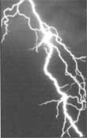
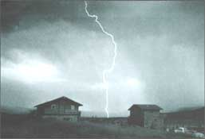
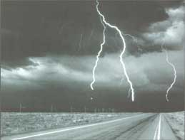
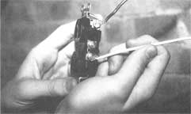
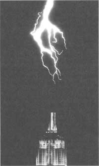

Be Lightning And Electricity Safe On Your Country Place
By John Vivian
April/May 1992
Protecting yourself from April Showers
By John Vivian
A good many years ago, when I was new to country living, I was talking on the phone - handset tucked between ear, chin, and shoulder - while replacing a washer on the kitchen faucet. It was drizzling outside, and I could hear occasional distant thunder but saw no lightning. Suddenly I felt a snap! in my ear and fell back, stunned. I never heard the thunderclap or saw the lightning bolt that must have hit the phone line miles away before seeking the best route to ground-my open phone line, literally an arm's length away from a wet iron sink.
My outer ear was singed, but not severely. Had the bolt been nearer or stronger, I could have been injured or even killed. There was no damage to the old-style Bell telephone, either, but a modern electronic telephone could have had its delicate chip-innards fried.
In 1990 (a typical year), 72 people were killed and 252 injured by lightning in the United States. The number of livestock and buildings lost nationwide isn't tabulated, but is substantially higher. And the solid-state electronic devices damaged by transients, spikes, and surges from lightning and other sources in the power and telephone lines are more numerous still.
Most of these losses could have been avoided. Here's how you can reduce the chance of electrical damage to the people, animals, and buildings on your property.
Electricity in a Nutshell
As we all learned in school - then promptly forgot - electrical current is a stream of free electrons: negatively charged (-) atomic particles moving at light speed toward a positively charged (+) ground. The volume of a current is measured in amperes (amps), the energy behind it in volts. (Yes, fellow electronics buffs, we could get into AC/DC, potential, load, and more technology, but it isn't relevant here.) What is important is that damage can be caused by a few amps of 110-volt house current - to say nothing of a lightning bolt that can develop up to 200,000 amps at 100 million or more volts.
Lightning occurs when violent winds inside clouds separate (-) and (+) charged air particles into layers (the (+)s on top of the cloud and the (-)s at bottom), with a corresponding (+) layer along the ground. When enough (-) charges accumulate, they will arc through as much as a mile of (nonconducting) air. Ka-pow! You have lightning, which will ground out on the highest conductor: a tree, building, or a horse or person standing in the open. And yes, you may have seen lightning streak upward. Often a lofty object such as a church steeple or tree will act as a "ladder," sending the (+) ground charge up to meet the (-) charge coming down from the clouds.
You can avoid harm from lightning or any electrical current by insulating it out or offering it a better route to the ground. Some materials (insulators such as rubber, brick, glass, and dry wood) hold tight to their electrons and won't easily allow a current through. Others (conductors such as your body and mine, anything wet, and most metals) happily pass along an electric current. Mother Earth herself (ground in electrical terms) is the best conductor of all.
Outdoors In a Storm
Learn to read your local weather indicators. At the approach of threatening clouds or the first distant thunderclap, get the kids out of the lake or off the jungle gym and inside a walled building or into a rubber-tired vehicle.
If you're caught out haying in a sudden electrical storm, do not seek shelter under a tree (especially if you smell metallic-spicy ozone and feel the hair on the back of your neck rise - indicating that you are in the ground field of a lightning cell). Hightail it away from trees or telephone poles and head for low ground (but not to a swamp or stream). If you are in the woods, find a clearing if you can. Move away from the tallest timber.
Drop the chain saw or hay rake and remove any exposed metal on your body (wristwatch, belt buckle, even a cap with a fabric-covered metal button on top). Don't lie or even sit, but squat on your rubber boot heels on a dry spot of ground in a knees-up/head-down crouch. Danger from direct strikes is negligible (side flashes cause the most injury), but make yourself as compact a target, with as little contact with moist ground as possible till the storm passes.
Inside the House
As soon as an electrical storm threatens, close all doors and windows. Lightning can arc through the air to the nearest conductor in the house (the TV, a radiator), while dry wood and glass are effective insulators.
Surprisingly perhaps, lightning will skip happily down chimneys. Meeting a non-conductive wood floor, brick fireplace, or slate stove board, it will arc across the room to the stereo (passing through anyone in its path). You're safest huddling on the floor in the center of a windowless room without a fireplace or stove. Never get between in-and-out conductors (say, between an open window or the fireplace and an exposed plumbing pipe).
Contrary to conventional wisdom, do not unplug appliances during an electrical storm. A powerful spike can jump out of the socket at you. Don't shower, wash, or do dishes either. Metal plumbing pipe is as effective a conductor as heavy electrical cable.
You know not to have a plugged-in radio, shaver, or hair dryer anywhere near the tub or sink; if an appliance falls into the water, it can electrocute you whether it is turned on or not. In newer construction, all outlets near water faucets are fitted with a building-code-mandated ground-fault protector: a wall outlet having a pair of small, colored buttons to reset a circuit breaker that kicks off if ever a smidgen of current leaves the confines of the household circuit. For automatic protection in an older home, invest $35 in a ground-fault protector for each outlet in your bath and kitchen. To be effective, the fixtures must be well grounded, so have an electrician install yours unless you honestly know what you are doing.
Telephone Lines
If you still have hardy, old-style, bell-ringer telephones, you may have heard a tinkle after lightning struck the high-lines - despite the TelCo lightning arrestor installed between the main lines and your home phones (in our service area, the arrestor is enclosed inside a square gray plastic housing connected to an independent ground).
However, answering machines, feature phones, faxes, and computer modems contain delicate solid-state electronics that can be ruined by a surge that isn't strong enough to trigger the TelCo arrestor. In a newer home-phone installation, you can disconnect your phones from the high-lines by pulling the clear-plastic modular clipplug from your "network interface" - a small plastic box located in your cellar or utility closet near the phone line entry.
For automatic protection in a system of any vintage, you can install a phone-voltage spike suppressor at the service entry or at each phone jack. (When modern electronics was young, we experimenters wired a pair of auto-type fuse holders into the red and green wires of the phone line. Loaded with low-amp fuses, they blew before spikes could damage our "phone freak" equipment.) Today, most electronics stores or catalogs sell under-$15 telephone-line spike suppressors that can be installed at the entry or between phone jack and terminal equipment.
Homeowner-installed suppressors require a 3-prong electrical socket to connect to ground (if your older house lacks modern 3-wire outlets, see "Connecting Spike Protectors and Modern Appliances to Older House Wiring"). The better designs contain an array of electronics to intercept transients as rapidly and completely as possible. You'd think that in combination these devices would sidetrack all electrical spikes, but they are not 100% effective. Lightning is incredibly powerful and can arc across a whole battery of arrestors if you offer an irresistible route to the ground (say, talking on the phone while luxuriating in the bathtub). Don't phone out during electrical storms, and let the answering machine take the risk with incoming calls.
CONNECTING SPIKE PROTECTORS
(AND MODERN APPLIANCES)TO
OLDER HOUSE WIRING
A spike protector, like most modern home appliances, is designed to be plugged into a 3-prong electric wall socket connected to an independent ground, as well as to the power-in and power-out lines. The wire ground (designed to handle accidental shorts between the power lines and an appliance's metal housing - blowing fuse or circuit breaker in the process, but saving you a shock) is essential if a spike protector is to function.
If your older home's wiring offers only 2-prong outlets, install 3-prongers. Unless fittings are corroded, an electrician should be able to reach ground through the metal outlet box and old-style two-wire, armored cable.
If you are home-wiring handy, you can fabricate your own 3-prong grounded outlet.
1. Buy a 3-prong replacement extension-cord socket, a 2-prong replacement plug, a foot of insulated two-wire, 14-gauge solid copper cable and enough single-strand insulated 14-gauge solid copper wire to reach from the outlet to a cold-water supply pipe or outside ground stake.
2. Connect the two power (silver/brass-colored) screw-terminals inside the 3-prong socket to the stripped ends of wires at one end of the two-wire cable.
3. Strip and connect the other ends of the two-wire cable wires to the terminals inside the two-prong replacement plug.
4. Connect the ground (green-painted) screw-terminal attached to the round plughole in the 3-prong socket to one stripped end of the single-strand copper wire.
5. Wrap a good foot of stripped wire, at the other end of the single strand of copper wire, around the burnished end of a metal ground stake or a metal cold-water supply pipe sanded shiny bright (soldering it on is best).
6. Use electrician's tape to seal all bare-metal connections.

Home Electric Lines
Lightning frequently strikes overhead power lines, causing a spike that can arc across the closed off-on switch of your microwave oven, TV, or computer and dance gleefully through their fragile electronic brains. Also, when an electric-company transformer blows or a large power user switches heavy equipment off or on, a less powerful surge can course through the lines - perhaps not harming the computer, but erasing anything in temporary RAM memory. A low-voltage brownout or total blackout can do the same.
Best protection against spikes is a 110v surge suppressor at your main electrical service panel. Have an electrician install it - and be sure the water inlet pipe or your pump is wired into the ground.
Easier and probably cheaper are local suppressors - one at each electrical outlet serving a major solid-state device. A single-plug version for the microwave or stereo costs less than $10. A multi-outlet power strip for an entertainment center or a computer and peripherals sells for up to $50.
House and Barn
Country homes and barns - especially when adorned with silos - are often the highest points in a farm landscape, and are notorious lightning attractors. Lightning rods have been sold for generations, and many 100-year-old green-glass-globed rods (properly called "points" or "air terminals") and Edison-era grounding systems are effective still.
If you move onto a place with an existing lightning-protection system, have it checked by a pro. Established lightning experts advertise in the Yellow Pages, are qualified to buy and install UL-certified systems, and hold a current license if your state requires it. Membership in the Lightning Protection Institute is an added plus. Your home insurer or local farm coop can give recommendations.
If you need a new system, shop carefully. Fly-by-night lightning-rod salesmen still ply the country roads using scare tactics to peddle jerry-built systems that can get you a burned barn. Demand (and check) local references as well as qualifications listed above.
Joe LeVangie, of Quabbin Lightning Protection Inc., in Wendell, Massachusetts, who installs UL-certified systems throughout south-central New England, will inspect an older system gratis. He will estimate costs of needed repairs and installation of a proper ground to the water pump and electric power grid if the system predates rural electricity. But don't expect repairs or a new system to be cheap. A reproduction of the old-time green-glass-globe lightning-catcher alone costs $50. "The copper cable needed to handle lightning is expensive and going up," LeVangie says. "A lot of people call, expecting to pay a hundred dollars or so. Many save me the bother of driving out when I tell them that a four-point system for a 24- to 32-foot Cape with a 4x4 chimney (one at each gable end and a pair flanking the flue - all with a dual ground) will run around $1,200."
If there's one thing i would not try
myself, it's designing and installing a
lightning-protection system. I don't
pretend to know how to handle 100
million volts.
But, pay or go without before you cook up your own lightning-protection system from copper plumbing pipe and Romex house wire. I've been doing most everything - 110- to 220-volt electrical wiring included - around the homestead for 30 years, but I don't pretend to know how to handle 100 million volts. (Manufacturers won't sell UL equipment to amateurs, and there are no do-it-yourself books on the topic-for good reason. Elevations and the spacing of points must be precisely calculated so their cones of protection overlap; the double grounds for each must be safe, effective, and matched to your soil; and grounding circuits can be very complicated.) If there's one thing I would not try myself, it's designing and installing a lightning-protection system. (For a more technical discussion of lightning-protection systems, see "Shock Therapy" in MOTHER issue #118.)
If your new-bought country place has an outside television antenna or satellite dish, have its grounding hookup checked by a professional. Many older antennas weren't properly grounded and just haven't been lightning-struck...yet. Any new TV reception system you install yourself comes with a grounding kit and directions. Follow instructions to the letter - especially sinking a grounding stake. (Be sure to soak soil around the stake any time you water the garden during the dry season.)
Livestock and Pets
It's safest to bring all your animals inside if electrical storms are predicted. If you can't get them in, don't rig them to be hit by lightning. Sammy and Princess Di were tough little riding ponies belonging to my neighbors' kids. They pastured happily on an open hill, where they would stand side by side through the worst weather, heads down and hindquarters into the wind. But after a particularly violent thunderstorm last fall, both were found stone-cold dead. Lightning had struck a brass ring on one animal's halter and arced across to the other's before reaching ground. The moral: Don't put a metal-fastened halter or collar on any animal to be left in the open in lightning country. If your daughter's noble steed won't accept a lead or bridle after being coaxed to the fence with a little grain, fit it with a rope halter. Don't tether or hobble livestock with a metal chain either.

If your dog is on a wire-run strung across an open area (a veritable antenna for lightning), ground the wire by attaching one end to a steel fence stake pounded as deep into the soil as you can get it. Then be sure that the lead and collar are made of rope or fabric strapping. Using a chain lead and metal collar on an ungrounded wire run is begging for a dead dog.
The pasture-center oak may be traditional, but livestock will shelter under it in storms. The lone tree may attract lightning, and your beasts could suffer. If you don't choose to chop the tree into firewood, have a pro install lightning protection for it. Or put strong fence around the drip line, particularly if you live in a heavy-weather zone. You'll also want lightning rods in any tree that's within 10 feet of a building.
Electric fence is cheap, effective, quick to go up, and is the livestock-containment method adopted by many new-to-the-country folks. But, all too often, novices lead the hot wire directly to a fence charger plugged into an electrical outlet in a house or barn. The fence can attract sky bolts or collect a ground charge that might use the house flue or barn cupola and weather vane as a "chimney" to send a bolt streaking into the heavens. Spend a couple of dollars and change for an electric-fence lightning protector and install it between fence and charger. Its thin metal-strip fuse will melt under high amperage, draining the current through a ground stake before the charger incinerates - possibly taking your buildings along with it. (It's a good idea to water that stake as well during dry spells.)
And contrary to conventional wisdom, lightning can indeed strike the same place twice. The Empire State Building, in New York City, has been hit as many as 48 times in a year . Don't let lightning strikes, surges, spikes, or brownouts from any source get you - even once.
John Vivian has shared his hard-won skills of self-reliant living in dozens of magazine articles and books, including Wood Heat (Rodale '78-'80). He divides his time between a small farm in the Berkshires and a fishing boat in Maine.
|
 |
 |
 |
|
 |
 |
|